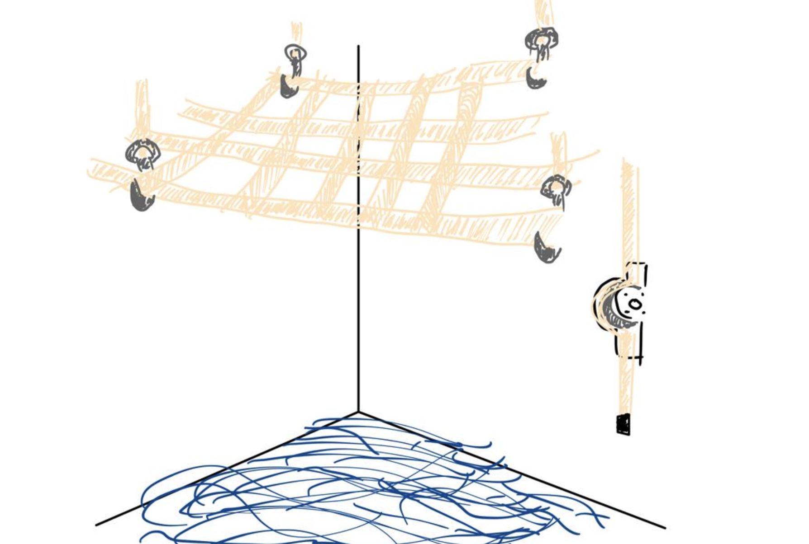
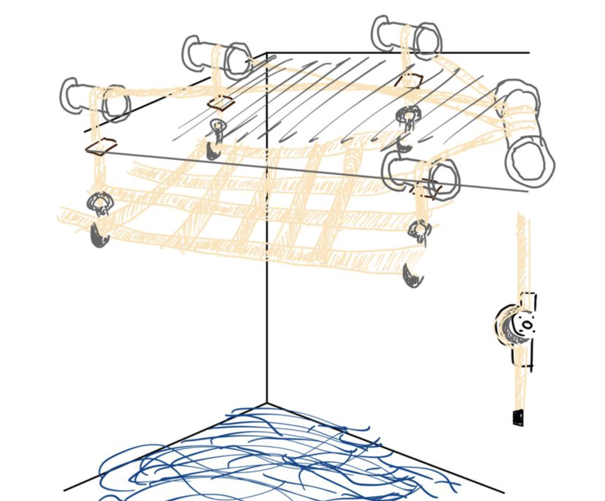

Notre système repose sur une technologie de levage motorisé via un réseau de poulies, sangles et treuils intégrés au plafond ou aux murs. L'installation est rapide, discrète et sans grands travaux.
Un exemple du dispositif installé dans un salon moderne.
Vue de la motorisation compacte au plafond.
Schéma du fonctionnement de l'ensemble : poulies, treuils, fixations.
Ce système est idéal pour les régions régulièrement touchées par les inondations. Il permet de sécuriser vos meubles, électroménagers, et objets de valeur en quelques secondes.
Retour à l'accueil